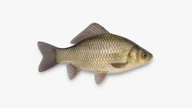

台钓网页游戏
正在加载真实钓场……
v0.2.3 · 鱼竿与钓场升级
青竹混养池3号钓位晴 · 微风
准备钓鱼v0.2.3
调漂与线组
先选鱼竿长度，再调整钩饵深度。
鱼竿长度4.5 m · 最远9.0 m
钓层判断离底 20 cm
正常状态固定露出4目；线组过底时露出5目。
水面
J
水底 2.40 m选择饵料
饵料与钓层共同决定各鱼种概率。

不错提鱼上岸顿口
鲫鱼
0.42 kg · 23 cm
提竿时机精准
使用饵料蚯蚓
钓层状态离底
咬口漂相顿口
上岸方式提鱼上岸
鱼种习性底层觅食